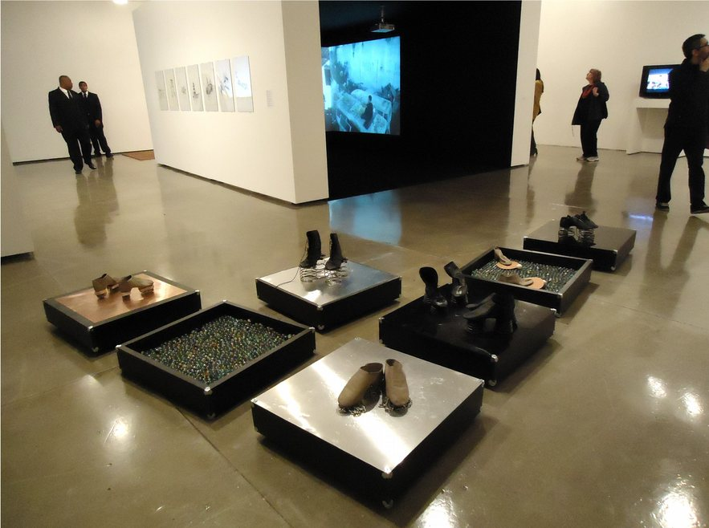

Sapatos Sonoros
Registro sonoro em preparação.




Sapatos com pandeiros, guizos, chocalhos e conchas: cada passo vira som. O corpo que anda passa a tocar o chão como um instrumento.
- Materiais
- Sapatos pandeiro, sapatos guizo, sapatos chocalho e conchas; materiais variados
- Dimensões
- Dimensões variáveis
- Local
- Panorama da Arte Brasileira, MAM São Paulo (2011); performances em aberturas de exposições (2011, 2013, 2015)
- Exposição coletiva
- Aparição (2015)